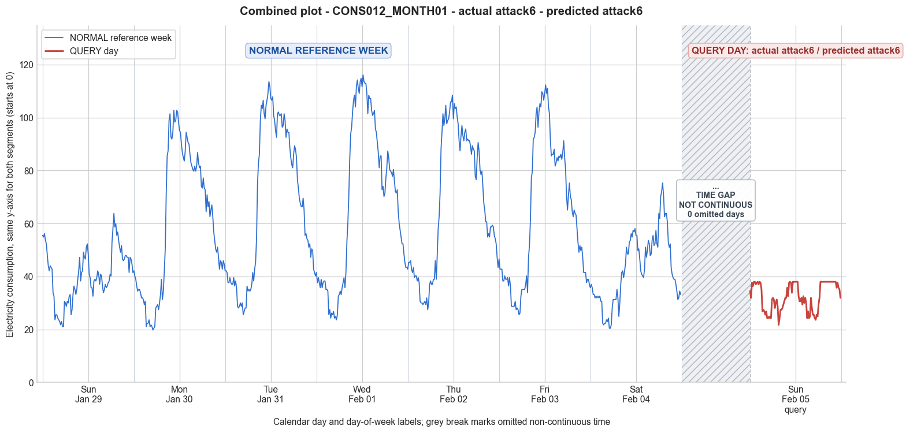

CONS012_MONTH01 · actual attack6 · predicted attack6
- Pair
- CONS012_MONTH01
- GT
- attack6
- Prediction
- attack6
- Binary GT
- attacked
- Binary Prediction
- attacked
- Source
- E010
- Parse
- stored
- Date
- 2012-02-05
- Weekday
- Sunday
- Latency
- 1.81 min
- Tokens
- 9056

Final output
Classification: - Manipulated Identified Attack: - Most Likely: Attack 6 - Confidence: Medium - Reasoning: The query day exhibits a long flat segment (17 consecutive intervals) at exactly 37.98, which is also the daily maximum. This is a strong signature of a cut‑off attack, where any consumption above a fixed threshold is replaced by that threshold. In the reference week (especially Day 0, the same weekday), the maximum reached 63.82 and no such flat region exists, confirming that the normal high peak has been capped. Attack 9 (constant profile) is ruled out because only a portion of the day is flat, not the whole day. Attack 4 (period‑based reduction) was considered but unlikely to produce a perfectly constant value over many intervals unless the attacker explicitly enforces a limit, which is the defining feature of Attack 6. Attack_Behavior_Explanation: - How consumption values are manipulated relative to the normal week: A cut‑off value (37.98) is applied, so any actual consumption reading exceeding this threshold is replaced by 37.98. The long evening block where consumption would normally be high (cf. reference Sunday peaks above 60) becomes a flat plateau, while lower daytime values remain unchanged. - Impact on magnitude and trend: The magnitude is significantly reduced – mean drops from 40.58 (reference Sunday) to 32.42, and the maximum is limited to 37.98 instead of the expected ~64. The trend is altered: the usual morning dip and evening peak are still visible, but the peak is flattened, introducing an artificial constant segment that destroys the natural variability. - Possible technical causes: Mainly false data injection, where the attacker configures the meter firmware or communication to cap reported consumption at a chosen limit, thereby avoiding charges for high‑usage periods. It can also be implemented via meter tampering that clips the analog signal before digitisation.
Prompt
You are a domain expert in smart grid security and electricity theft analysis, with deep knowledge of non-technical loss (NTL) attack patterns in smart meters. You are given: 1. A plot of one week of original (normal) energy consumption for a smart meter, provided as context for the customer's typical consumption behavior. 2. A plot of one day of energy consumption for the same smart meter, which may or may not be manipulated. Below are common attack types, each defined by how consumption values are altered, their impact on magnitude and trend, and their possible technical causes. Attack 0: Generated by replacing all electricity consumption samples with zero values for the entire observation duration. Simulates a scenario where no energy usage is reported at all. May be caused by a total meter bypass or severe meter malfunction. Completely eliminates both the trend and magnitude of the consumption profile. Attack 1: Multiplies the actual energy consumption by a constant random value between (0,1). The lower the factor, the higher the severity. Can be triggered by meter bypass, magnetic interference, reverse current, and false data injection. The consumption trend remains the same but the magnitude is uniformly reduced. Attack 2: Generated by replacing consumption samples with zeros for a random duration. Also known as an on-off attack. Can be caused by full meter bypass, false data injection, and reverse current. Changes both the trend and amplitude. Attack 3: The actual consumption is multiplied by different random factors between 0 and 1, with a unique factor per sample. Similar to Attack 1 but the scaling factor varies per reading. Caused by meter bypass, magnetic interference, and reverse current. Changes both the trend and amplitude. Attack 4: Simulates energy theft over a randomly selected period within the observation window. All measurements in that period are reduced. Caused by meter bypass, magnetic interference, reverse current, and false data injection. Changes both the trend and amplitude. Attack 5: Each sample is replaced by a false value obtained by multiplying the average normal consumption by a random variable between 0 and 1, with a different variable per sample. Caused by false data injection. Produces a completely different pattern from the original consumption profile, changing both trend and magnitude. Attack 6: A random cut-off point is selected and all consumption values above it are replaced by that cut-off value. The attacker avoids exceeding a predefined maximum limit. Mainly caused by false data injection. Changes both the trend and amplitude. Attack 7: A random cut-off point is subtracted from each sample; if the result is negative, zero is reported. Similar to Attack 6 but replaces exceeding values with zero instead of the cut-off point. May be caused by false data injection or total meter bypass. Does not change the trend but reduces overall consumption. Attack 9: All samples are replaced by the average daily energy consumption, resulting in a flat constant profile. Easily detectable because constant consumption does not reflect normal customer behavior. Caused by false data injection. Eliminates all trends. Attack 10: Reverses the consumption pattern without reducing the total amount. Applicable when the electricity company uses time-varying pricing, allowing the attacker to shift high consumption to off-peak periods. Caused by false data injection. Changes the trend without decreasing total consumption. Attack 12: The attacker replaces their consumption pattern with that of a lower-consuming user. The legitimate user unknowingly pays the adversary's electricity bill. Caused by false data injection. Attack IEEE: For each 15-minute interval across the entire day, the consumer either reports the actual electricity consumption or substitutes it with zero. The result is a profile where some intervals reflect real consumption while others are zeroed out, creating an irregular pattern across the full day. May be caused by false data injection. Changes both the trend and amplitude. Given the two plots, determine: 1. Whether the day is attacked or original - compare the flagged day against the normal week and assess whether the consumption pattern is consistent with normal behavior or shows signs of manipulation. If the day is consistent with the customer's typical consumption behavior, classify it as original and provide no further analysis. If manipulation is detected, proceed to point 2. 2. Which attack type this most likely is - identify the single most probable attack and justify your choice based on how the flagged day deviates from the normal week. 3. The behavior of the identified attack - explain how the consumption values are manipulated, their impact on magnitude and trend, and the possible technical causes behind this type of attack. Output Format: Classification: - Original | Manipulated Identified Attack: (fill only if manipulated) - Most Likely: Attack X - Confidence: High | Medium | Low - Reasoning: Why it matches Attack X and why Attack Y and Attack Z were ruled out (list top 2 alternatives considered) Attack_Behavior_Explanation: (fill only if manipulated) - How consumption values are manipulated relative to the normal week - Impact on magnitude and trend - Possible technical causes
Reasoning content
We are given a query day (DAY_ID=0) with a set of 96 readings. The reference week has 7 days with their own statistics and full 96-interval vectors. We need to compare the query day to the reference week to see if it's original or manipulated. If manipulated, identify attack type. First, let's analyze the data: Reference week days: Day 0 (Sunday Winter?): min=21.06, max=63.82, std=9.88, mean=40.58. Day 1 (Monday): min=19.78, max=102.74, std=26.71, mean=60.58. Day 2 (Tuesday): min=25.53, max=113.59, std=28.81, mean=67.13. Day 3 (Wednesday): min=23.61, max=116.15, std=30.54, mean=68.50. Day 4 (Thursday): min=27.44, max=108.49, std=26.07, mean=67.66. Day 5 (Friday): min=25.53, max=112.32, std=27.09, mean=63.52. Day 6 (Saturday): min=20.42, max=75.30, std=13.18, mean=42.96. Query day: Day 0 (Sunday again? dow=6, dom=7, cal_month=2, so this is the next Sunday, a week later? The reference week Day 0 was Sunday (dow=6) cal_month=1, dom=0. Query day is also dow=6, dom=7, cal_month=2, so it's another Sunday, consistent with same weekday. We might expect similar pattern to Day 0 of reference week or Day 6 (Saturday? Actually Day 6 was dow=5, so that was Saturday). So query day is Sunday, similar to reference Day 0 but later in the month. The reference Day 0 had mean=40.58, max=63.82, min=21.06, std=9.88. The query day has mean=32.42, max=37.98, min=21.70, std=5.16. So it's much lower, the max is only 37.98, while reference Sunday max was 63.82. The pattern also seems suspicious: query day data starts around 34-37, goes down to mid 20s, then rises again and plateaus at 37.98 for a long stretch from index around 76 to 92 (roughly). That flat constant region at 37.98 is very suspicious: from reading index ~76 to ~92 (15 intervals?) all exactly 37.98. Let's examine query day vector: Query day data: 34.46, 31.91, 37.65, 36.38, 37.98, 37.98, 37.01, 37.65, 37.98, 37.01, 37.98, 37.65, 35.10, 26.80, 27.44, 26.80, 25.53, 26.80, 24.25, 24.25, 24.89, 24.25, 24.25, 31.27, 31.91, 31.27, 28.08, 29.99, 31.27, 28.72, 21.70, 24.25, 27.44, 27.44, 28.08, 29.36, 30.63, 31.91, 31.91, 35.74, 32.55, 37.65, 37.98, 37.65, 33.82, 37.98, 37.98, 37.98, 37.98, 37.98, 37.98, 32.55, 30.63, 30.63, 31.91, 29.36, 32.55, 29.99, 31.91, 29.99, 24.25, 26.80, 24.25, 24.89, 31.91, 28.08, 25.53, 25.53, 24.25, 23.61, 25.53, 24.89, 29.36, 31.91, 37.98, 37.98, 37.98, 37.98, 37.98, 37.98, 37.98, 37.98, 37.98, 37.98, 37.98, 37.98, 37.98, 37.98, 37.98, 37.98, 37.98, 35.74, 37.65, 35.74, 35.10, 31.91 I see a block from around reading 75 (human count, but let's index from 0). Reading 0: 34.46, ... After the drop at 60-64 there's a rise to 37.98 again. Starting from reading 74: "37.98, 37.98, 37.98, 37.98, 37.98, 37.98, 37.98, 37.98, 37.98, 37.98, 37.98, 37.98, 37.98, 37.98, 37.98, 37.98, 37.98, 35.74, 37.65, 35.74, 35.10, 31.91". Actually reading 73? Let's index properly: I'll list with indices: Query day readings (0-95): 0:34.46 1:31.91 2:37.65 3:36.38 4:37.98 5:37.98 6:37.01 7:37.65 8:37.98 9:37.01 10:37.98 11:37.65 12:35.10 13:26.80 14:27.44 15:26.80 16:25.53 17:26.80 18:24.25 19:24.25 20:24.89 21:24.25 22:24.25 23:31.27 24:31.91 25:31.27 26:28.08 27:29.99 28:31.27 29:28.72 30:21.70 31:24.25 32:27.44 33:27.44 34:28.08 35:29.36 36:30.63 37:31.91 38:31.91 39:35.74 40:32.55 41:37.65 42:37.98 43:37.65 44:33.82 45:37.98 46:37.98 47:37.98 48:37.98 49:37.98 50:37.98 51:32.55 52:30.63 53:30.63 54:31.91 55:29.36 56:32.55 57:29.99 58:31.91 59:29.99 60:24.25 61:26.80 62:24.25 63:24.89 64:31.91 65:28.08 66:25.53 67:25.53 68:24.25 69:23.61 70:25.53 71:24.89 72:29.36 73:31.91 74:37.98 75:37.98 76:37.98 77:37.98 78:37.98 79:37.98 80:37.98 81:37.98 82:37.98 83:37.98 84:37.98 85:37.98 86:37.98 87:37.98 88:37.98 89:37.98 90:37.98 91:35.74 92:37.65 93:35.74 94:35.10 95:31.91 So from index 74 to 90 (17 consecutive readings) all exactly 37.98. That is a flat constant region of almost 4 hours (17*15min = 255 min). That looks highly artificial. In normal consumption, such a flat constant segment is extremely unlikely. So this is manipulated. Now, which attack type? We have many attacks. The presence of a flat constant region at a specific value (37.98) suggests either attack 9 (all samples replaced by average daily energy consumption) but here it's not all samples, only a block. Attack 9 would be all day constant. Attack 6: cut-off value, replaces exceeding values with a cut-off, but then you'd have many original values below cut-off, and values above replaced by cut-off. That could produce a flat top, but the flat top would be exactly the cut-off. However, in this data, the max is 37.98, and the constant region is 37.98. Could it be attack 6? If the cutoff is 37.98, then all values above 37.98 would be clipped to 37.98. But the original values might vary, and some might be below 37.98. The flat region suggests that many original readings were above 37.98 and got clipped to 37.98, while the surrounding values were below 37.98. But the pattern shows some values of 37.98 before the long flat block, e.g., 4,5,8,10,42,45,... The long flat block is a continuous stretch of 17 intervals. That could be a period where original consumption was high (above cutoff) so they all became 37.98. However, typical daily consumption often peaks in the evening; here it's from index 74 (around 18:30? 15-minute intervals: index 0 = 00:00, index 48 = 12:00, index 74 = 18:30, index 90 = 22:30). So flat block in the evening, which is plausible. Attack 6 would be "changes both trend and amplitude". The mean is 32.42, max is 37.98, min 21.70. The reference Sunday (Day 0 of reference week) had max 63.82, so a cutoff at 37.98 would heavily reduce the evening peak. The flat block length is long, suggesting original consumption must have been consistently above 37.98 for that whole block, maybe with some variation, but all clamped. Could it be attack 7? Attack 7 subtracts cutoff from each sample, min zero. That would not produce a flat constant max, but rather if cutoff is large, many zeros. Not like this. Attack 4: reduces measurements in a random period. Could produce a period of consistent readings if the reduction is constant, but likely not flat. Attack 2: zero for random duration, on-off. Not zeros here. Attack 5: replaces each sample by average normal * random, producing random pattern. Attack 3: multiplies by random per sample, wouldn't create constant blocks. Attack 1: multiplies by constant, scales down, not constant block. Attack 12: replaced by lower-consuming user's pattern, could be anything but wouldn't create flat blocks. Attack IEEE: zero intervals for some, but not zero here. Attack 10: reverses pattern, no. Attack 0: all zero, no. So the most plausible is attack 6: a cutoff at 37.98, because the long flat stretch at exactly the maximum value across the day suggests that many high values were capped at 37.98. Also, there are other instances of 37.98 scattered earlier (e.g., 4,5,8,10,42,45). So 37.98 appears many times, it's the most frequent value. The reference week Day 0 had no such constant stretch. The query day also has a slight diurnal pattern: low around early morning (index 13-22, 60-71) values in 20s, and then rising to 37.98 repeatedly. This looks like a profile with a cutoff applied to a pattern that normally would have higher peaks. The maximum in reference Sunday was 63.82, so if a 37.98 cutoff were applied, peaks would be reduced, producing a flat top. Thus, I strongly suspect Attack 6. Could it be Attack 9? Attack 9 replaces all samples with the daily average consumption, giving a flat constant profile. But here only a portion is flat, not the entire day. So not Attack 9. Attack 4 might be possible if a period is reduced, but reduction would likely not result in exactly the same value for many intervals; it would reduce them proportionally or by a fixed amount, but would produce varying values if original varied. Unless the reduction is to a constant level, but it says "All measurements in that period are reduced." That usually means they are lowered but could be varying if original varied. However, the exact same value repeated for 17 intervals is a strong signature of a cutoff, not a proportional reduction unless the original was exactly constant, which is unlikely. So Attack 6 is the best match. Alternatives considered: Attack 4 and Attack 9. Attack 4 could mimic if an attacker reduced all values in a period to a constant, but that would be unusual and more like a cutoff. Attack 9 is ruled out because not entire day constant. Attack 2 ruled out because no zeros. Confidence: Medium, because we don't have the original query day without manipulation to compare exactly, but the pattern strongly implies a cap. Now, Attack_Behavior_Explanation: Explain: Consumption values are manipulated by selecting a cut-off point (seems to be 37.98) and replacing any consumption above that with the cut-off value. This reduces the magnitude significantly, altering the trend by flattening peaks. The normal consumption likely had higher peaks (as seen in reference Sunday, max 63.82). The result is a lower mean (32.42 vs. 40.58) and very low max. Possible technical causes: mainly false data injection, where the attacker sets a maximum reportable value to underreport high consumption periods. Output as required.